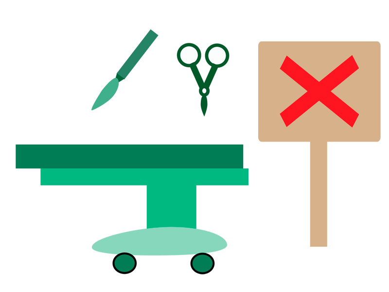

1. สุนัขมีสุขภาพสมบูรณ์ แข็งแรง ไม่มีโรคประจำตัว
2. สุนัขต้องมีอายุตั้งแต่ 1 - 7 ปี

3. สุนัขต้องมีน้ำหนักตัวตั้งแต่ 17 กิโลกรัมขึ้นไป

4. สุนัขเพศเมียต้องไม่อยู่ในระหว่างเป็นสัด ตั้งครรภ์ หรือให้นมลูก
5. ได้รับการฉีดวัคซีนครบถ้วน หากเพิ่งได้รับการฉีดวัคซีนควรเว้นระยะอย่างน้อย 1 เดือน จึงจะสามารถบริจาคเลือดได้

6. ไม่มีประวัติการผ่าตัดใหญ่ในช่วง 3 เดือน

7. ไม่ได้รับยาใดๆ ในช่วง 2 สัปดาห์ก่อนหน้า

8. อาบน้ำให้สุนัขก่อนพามาบริจาคเลือด